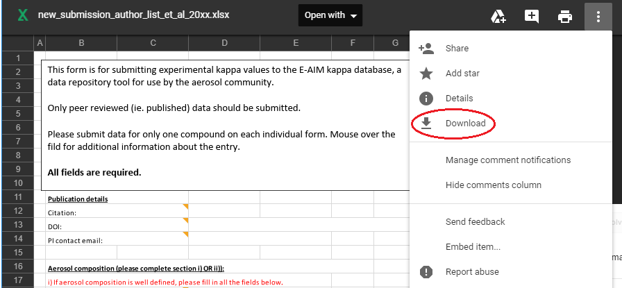
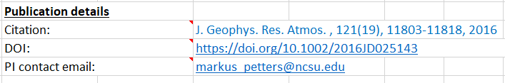
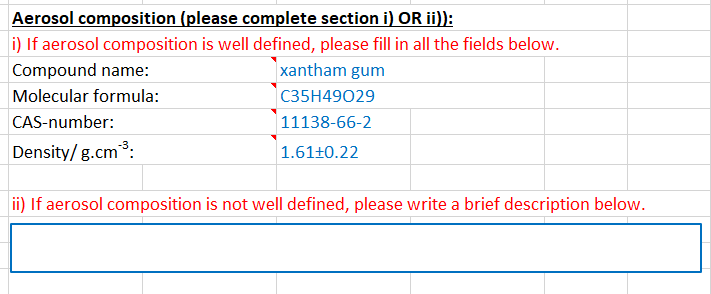
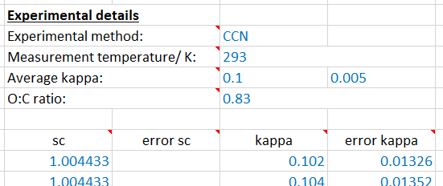
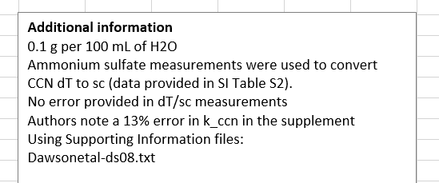
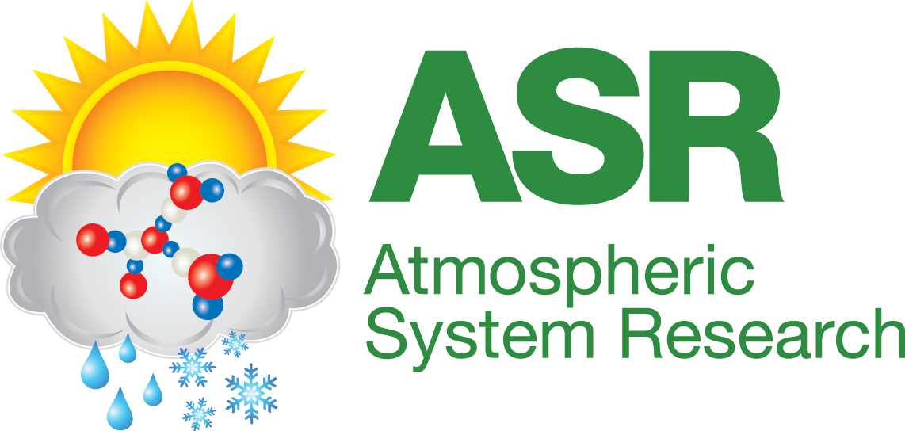

New kappa submissions will be reviewed for completeness and compared against referenced
peer reviewed plublication. The database curators may ask for additional information or clarification.
Updating the database should take one to two weeks after submission.
- Download the following spreadsheet.
- Rename the spreadsheet to a unique name.
- Open and complete all the relevant fields within the spreadsheet.
- Email the spreadsheet(s) to hygroscopicity.database@gmail.com with
the subject line "New kappa values"
Example
Experiments are often unique in nature and purpose. The example provided below utilized data presentend in
Dawson et al. (2016) in which the hygroscopicity of xantham gum was measured with different instruments
and different additives.
Submission spreadsheet
Submit a unique spreadsheet for EACH compound, experimental method, and/or operating condition utilized
in your research.
To download a blank sheet, follow the above link. This will open the spreadsheet in a preview mode. Click the
three dots in the upper right and choose download.

Example file names:
xantham_gum_CCN_Dawson_etal_2016.xlsx
xantham_gum_NaCl_CCN_Dawson_etal_2016.xlsx
xantham_gum_HTDMA_Dawson_etal_2016.xlsx
xantham_gum_NaCl_HTDMA_Dawson_etal_2016.xlsx
Here we use the filename structure of material description, method to measure kappa, and citation author/year.
If needed, include other differentiating descriptors in the file name such as operating temperature or volume fraction.
Note that spaces and special characters are not allowed in the filename.
Complete individual files
The following information is also included in the comments within the downloaded spreadsheet.
Complete the following details for each sheet
Publication details include
- Citation: Use the abbreviated journal name and include issue/volume/page number details and year published
- DOI: Include the DOI assigned to the publication. If an archive DOI was created for the data, include that
DOI in the "Additional information" box (see below).
- PI contact email: The primary contact for this research publication. This does not need to be the same as the
person who submits to the database.

If the aerosol composition is well defined, complete as much of 'section i' as possible.
- Compound name: The common name of the material analyzed
- Molecular formula: The chemical formula for the material
- CAS-number: Information about the CAS Registry is here.
The CAS Registry number can be found through a lookup tool (e.g. link
and link) and is usually provided by the supplier. Enter N/A if the CAS number is unknown or undefined.
- Density: Standard density for the material in g/ml. Use N/A if CAS number is undefined
If the aerosol composition is not well defined (e.g. SOA derivatives or ambiant measurements), fill in 'section ii'
with as much information as possible (e.g. 'SOA formed from the ozonlysis of alpha-pinene').

The experimental details portion of the spreadsheet include
- Experimental method: Options include HTDMA (Humidified Tandem Differential Mobility Analyzer),
CCN (Size or supersaturation resolved Cloud Condensation Nuclei), or EDB (Electrodynamical Balance). You may enter a new acronym here. If you do, please provide more information
in the "Additional Information" text box.
- Measurement temperature: Reported in Kelvin. Use 293 for room temperature.
- O:C ratio: Oxygen to carbon ratio should either be computed from the molecular formula or taken from a measurement. If measured, please provide the method in the
"Additional Information" text box. If composition is not well defined enter N/A.
- Average kappa: The average and standard deviation of the kappa value from any reported data.
- Reported data (kappa vs sc/aw): Enter the water activity, RH, or supersaturation
the measurement was performed.
Specifically enter
aw for water activity,
RH for relative humidity, or
sc for critical supersaturation. RH should only be used if the data were not corrected for the Kelving effect. If measurement is over a flat surface RH = aw.
If experimental uncertainity was derived, complete the relevent error columns.

Any other information not covered by the above fields should be added to the "Additional information" box.
This includes notes on how to reproduce the data from published graphs/tables/supplements, how experimental error
was calculated, volume fraction details, etc. If additional space is needed, there is an "Additional information"
sheet accessible at the bottom of the spreadsheet. If this sheet is used, indicate that further information is
available in the "Additional information" box.

This database was made possible via grant support from the US Department of Energy Atmospheric System Research program (Grant DE-SC 0012043) and funds from the UK Natural Environment Research Council International Opportunity Fund program (Grant NE/N013700/1).
